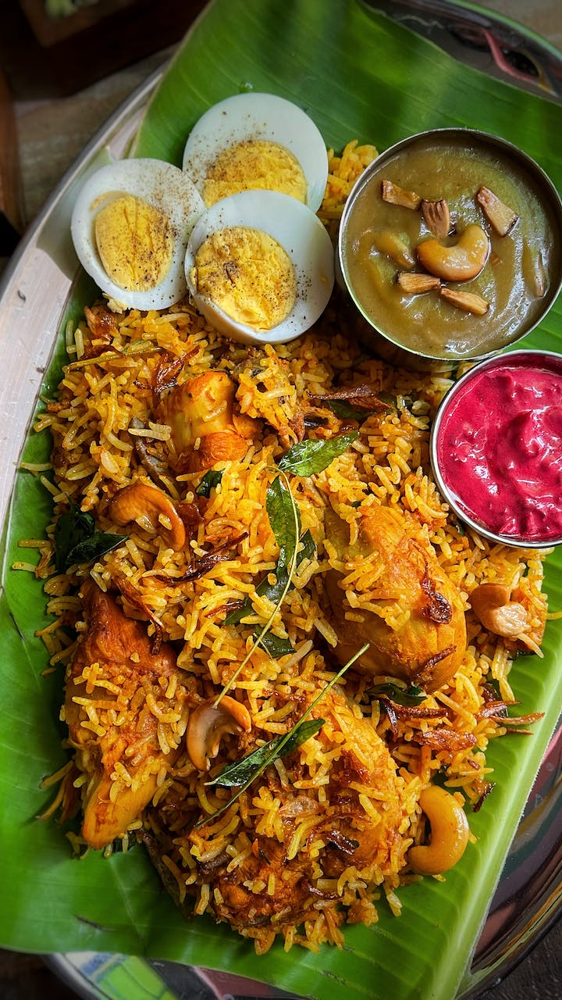

In Chettinad food, major spices used include anasipoo (star aniseed), kalpasi (a lichen), puli (tamarind), milagai (chillies), sombu (fennel seed), pattai (cinnamon), lavangam (cloves), punnai ilai (bay leaf), karu milagu (peppercorn), jeeragam (cumin seeds), and venthayam (fenugreek). What makes Chettinadu cuisine stand out is its ingenious use of freshly ground Chettinadu masala using various spices like fenugreek, star anise, fennel seeds, cinnamon, cloves, bay leaf, peppercorns, and cumin seeds. it is a beautiful 'curry' balancing spicy and aromatics perfectly. Chettinad in Tamil Nadu was a strategic location for the spice trade. Its residents, the Chettiyars, prospered in the business of peppers and chillies with countries in Southeast Asia and the Arabs. Some food historians believe that biryani was introduced on the Malabar Coast by these Arab traders.
Biryani
Varaity of Foods and Tasty And Healthy Foods for One Place in Tamil Fashion
What makes Chettinad Biryani truly special is the addition of traditional Chettinad ingredients. These include curry leaves, shallots (small onions), ginger, garlic, and a generous amount of freshly ground black pepper. These ingredients contribute to the bold and robust flavors that Chettinad cuisine is known for.